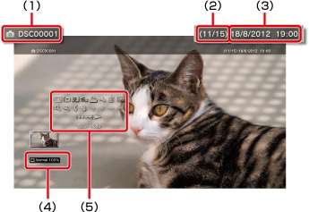

Fotoğraf > Kontrol panelini kullanma
Kontrol panelini kullanma
Ekrandaki kontrol panelini kullanarak çeşitli işlemler gerçekleştirin. Kontrol paneli  düğmesine basılarak görüntülenebilir veya gizlenebilir.
düğmesine basılarak görüntülenebilir veya gizlenebilir.
Ekran Modu

Ekranda görüntülenen görüntünün boyutunu değiştirin.
| Normal | Görüntüyü orantısını değiştirmeden ekran boyutuna sığacak şekilde görüntülemek için ayarlayın. |
|---|---|
| Yakınlaştırma | Görüntüyü orantısını değiştirmeden tam ekran boyutunda görüntülemek için ayarlayın. Görüntünün üst ve alttaki veya sol ve sağdaki bölümleri kesilir. |
İpucu
Görüntü dosyasına bağlı olarak görüntü modunu değiştirmeniz mümkün olmayabilir.
Efekti Değiştir
Görüntüleri değiştirme yöntemini değiştirin.
| Normal | Geçerli olarak görüntülenen görüntüyü sonraki görüntüyle değiştirmek için ayarlayın. |
|---|---|
| Kaydırma | Slayt gösterisi formatında geçerli olarak görüntülenen görüntüyü sonraki görüntüyle değiştirmek için ayarlayın. |
| Soldurma | Sonraki görüntüye geçmek için soluklaştırma efektini kullanmak için ayarlayın. |
Kırpma
Görüntünün üst, alt, sol veya sağ tarafındaki gereksiz bölümleri siler. Saklamak istediğiniz alanı seçmek için kablosuz kontrol cihazının sol ve sağ çubuklarını kullanın. Herhangi bir yönde kaydırmak için sol çubuğu kullanın ve yakınlaştırmak veya uzaklaştırmak için sağ çubuğu kullanın. Kırpılan görüntüler farklı dosya adları kullanılarak kaydedilir.
İpucu
Yalnızca PS3™ sisteminin sistem depolama alanında depolanan görüntüler kırpılabilir.
Çalma Listesine Ekle
Bir görüntüyü oynatma listesine ekleyin.
İpucu
Yalnızca sistem depolama alanına kaydedilen görüntüler oynatma listesine eklenebilir.
Yazdır
Yazıcıyı kullanarak bir görüntüyü yazdırın.
İpucu
Yazdırmak için, önce yazıcıyı  (Ayarlar) >
(Ayarlar) >  (Yazıcı Ayarları) altında [Yazıcı Seçimi] içinde yapılandırmanız gerekir.
(Yazıcı Ayarları) altında [Yazıcı Seçimi] içinde yapılandırmanız gerekir.
Duvar Kağıdı Olarak Ayarla
Ekranda görüntülenen görüntüyü duvar kağıdı olarak ayarlar. Görüntü genişletilmiş, küçültülmüş veya döndürülmüş olsa bile ekranda göründüğü şekilde ayarlanır.
İpuçları
- Duvar kağıdı kullanılmadığında, (Ayarlar) >
 (Tema Ayarları) > [Arka plan] altındaki ayarı yapın.
(Tema Ayarları) > [Arka plan] altındaki ayarı yapın. - Verilen bir zamanda yalnızca bir görüntü duvar kağıdı olarak ayarlanabilir. Başka bir görüntü seçilirse, geçerli görüntünün üzerine yazılır.
Sil
Görüntüleri siler.
İpucu
Yalnızca sistem depolama alanına kaydedilen görüntüler silinebilir.
Görüntüle
Görüntü hakkındaki bilgileri görüntüler.  düğmesine her bastığınızda, Exif bilgileri, bilgi çubuğu içeren ekran ve ek bilgiler olmayan ekran arasında değişir.
düğmesine her bastığınızda, Exif bilgileri, bilgi çubuğu içeren ekran ve ek bilgiler olmayan ekran arasında değişir.
Bilgi çubuğu içeren bir ekran

(1) |
Görüntü adı |
|---|---|
(2) |
Görüntü sayısı / toplam görüntü sayısı |
(3) |
Kaydedilen tarih ve saat |
(4) |
Durum simgesi |
(5) |
Kontrol paneli |
Yakınlaştır / Uzaklaştır

Bir görüntüyü büyütmek veya küçültmek için yakınlaştırır veya uzaklaştırır. Herhangi bir yönde kaydırmak için kablosuz kontrol cihazının sol çubuğunu kullanabilirsiniz ve yakınlaştırmak veya uzaklaştırmak için sağ çubuğu kullanabilirsiniz.
Sola Çevir / Sağa Çevir
Görüntüyü sola veya sağa 90 derece döndürür.
Yukarı / Aşağı / Sol / Sağ
(Ekran Modu), [Yakınlaştırma] olarak ayarlandığında olduğu gibi gizli bölümleri görüntülemek için görüntüyü taşıyın.
Önceki / Sonraki
Önceki ve sonraki görüntüyü görüntüler.
Slayt Gösterisi
Otomatik olarak her görüntüyü sırayla görüntüler.